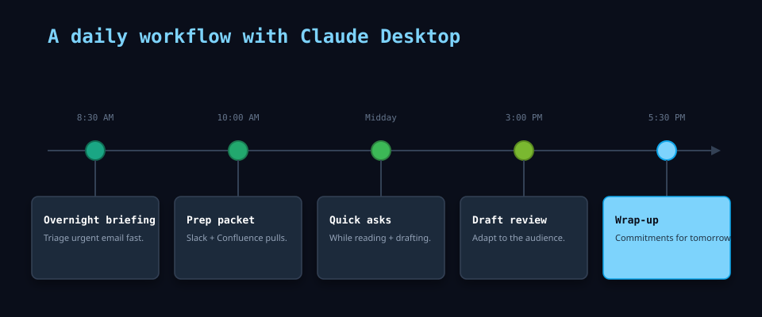

A daily workflow with Claude Desktop

I once answered the wrong @mention first—same inbox, same morning, I confused “I saw it” with “decision recorded.” Leaving Claude Desktop up with Slack and mail connected fixed the ordering: the brief now lists threads that actually need a reply before I burn twenty minutes on noise. Cowork covers what’s on screen; connectors cover what’s in the systems. Below is the day shape I repeat.
When I reach for this #
Every workday. Claude Desktop with Cowork mode is my default working environment alongside my browser, email client, and editor.
What I do #
Morning: triage and briefing #
I open Claude Desktop and start with a quick briefing. With connectors enabled (Slack, Outlook, Confluence), I ask:
“What’s happened overnight that I should know about? Check Slack and email for anything flagged or time-sensitive.”
Claude scans recent messages, surfaces threads that mention me or my projects, and summarizes the overnight activity. I get a two-paragraph brief instead of scrolling through fifty messages.
For email specifically, I ask Claude to sort by urgency:
“Which of these emails need a response today, and which can wait?”
The triage output is usually a short list with one-line summaries. I handle the urgent ones first.
Mid-morning: meeting prep #
Before any meeting, I ask:
“I have a meeting about [topic] in 30 minutes. Pull together what I need to know — recent updates, open decisions, anything I committed to last time.”
With Confluence and Slack connectors, Claude pulls recent page edits, thread discussions, and any action items with my name on them. The output is a short prep doc I can scan in five minutes.
During the day: Cowork as sounding board #
With Cowork mode active, Claude sees what’s on my screen. This makes quick questions nearly free:
- While reading a long document: “Summarize the key decisions in this doc”
- While drafting an email: “Is this phrasing clear, or am I burying the ask?”
- While reviewing data: “Does this trend match what we discussed last week?”
The setup cost is zero because Claude already has the visual context. I ask more questions, and they’re smaller and more specific than they’d be in a cold chat session.
Afternoon: drafting and review #
When I need to write — a status update, a project proposal, a response to a complex thread — I draft in my editor and ask Claude to review:
“Read this draft. Flag anything unclear, contradictory, or unnecessarily long.”
I also use Claude to adapt my writing for different audiences:
“Rewrite this technical summary as a two-paragraph update for a non-technical stakeholder.”
End of day: wrap-up #
Before closing out, I ask:
“What did I commit to today that I haven’t finished? What’s carrying over to tomorrow?”
Claude scans the day’s conversations, emails, and any notes I’ve made. The output is a short carry-over list that becomes tomorrow morning’s starting point.
What goes wrong #
- Connector permissions — some Slack channels or email threads may not be accessible depending on your connector setup. If Claude says it can’t find something, check which workspaces and accounts are connected
- Over-reliance on summaries — Claude’s summaries are good but not infallible. For anything high-stakes, I read the source material. I use the summary to find where to look, then I open the thread or doc myself
- Context window limits — very long threads or documents may get truncated. For deep analysis of a 50-page document, consider NotebookLM so you can ground the model on the full source file
Notes #
Desktop vs Code — Claude Desktop is where I think, review, and run ambient assistance. Claude Code is where I build, query, and execute in the repo. I use both daily: Desktop stays open for conversation; Code opens when I need shell, files, or APIs.